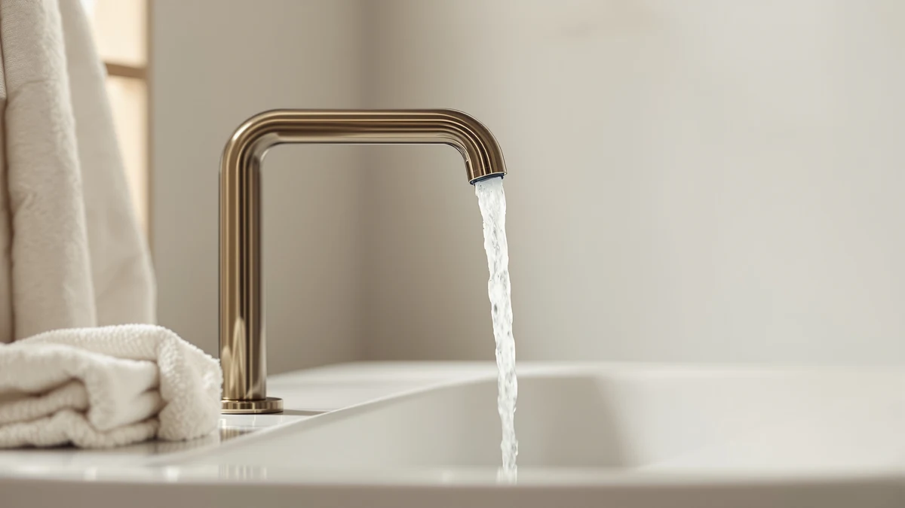

Bathroom vs Restroom: Which Is Better? (2026)
Prices and picks verified as of September 2026. Independent, reader-supported reviews.


Things to Know Before You Buy
- A restroom describes a shared facility, usually with just a sink and a toilet, while a bathroom is a private space that often adds a shower or tub.
- The faucet that fits one space rarely fits the other well. A touchless sensor faucet earns its keep in a restroom used by dozens of people a day, but it is overkill in a quiet single-family bathroom.
- Commercial restrooms in the US usually have to meet ADA lever or touch-free requirements and WaterSense flow limits, while a home bathroom faucet only needs standard lead-free and cUPC certification.
- Cycle-count ratings matter more in a restroom than a bathroom. A ceramic valve rated for 500,000 uses can last a decade in a home but only a couple of years under restroom-level traffic.
Bathroom vs restroom is a distinction most people gloss over until they are staring at a sink cutout, a budget, and a stack of faucet options that all look similar online. The words get used interchangeably in casual conversation, but they point to two different kinds of spaces with different traffic, different codes, and different expectations for how long a faucet needs to hold up.
We compared how each space is defined, how the faucets built for each one differ in construction and price, and how that difference plays out day to day. The FORIOUS, Hurran, Yodel, ADdormorn, VEVOR, and BWE faucets referenced throughout this guide illustrate the range, from simple two-handle residential fixtures to sensor-driven models built for higher traffic.
Quick Answer
For a private home bathroom, a standard two-handle faucet like the FORIOUS Matte Black pick covers nearly everyone's needs at a reasonable price. For a shared restroom, whether in a small business, a rental common area, or an RV, a touchless model such as the Yodel or VEVOR faucet holds up better under constant use and cuts down on germ transfer between users.
What is Bathroom?
A bathroom is a private room, almost always inside a home or a hotel guest room, built around personal hygiene. It typically holds a sink, a toilet, and either a shower, a tub, or both. Because one household or one guest uses it at a time, the design leans toward comfort and appearance rather than pure throughput.
This is where finish and handle style carry real weight. A homeowner picking a bathroom faucet weighs matte black against brushed nickel, considers whether a widespread three-hole setup matches the vanity, and decides between one handle or two based on personal habit rather than code requirements. The FORIOUS and Hurran faucets in this guide are built for exactly that scenario: a small number of daily users who want a fixture that looks intentional and lasts for years without heavy-duty commercial hardware.
Because traffic stays low, a home bathroom faucet does not need the cycle life of a commercial fixture. A ceramic valve rated for 500,000 open-close cycles is standard across the FORIOUS line. That translates to well over a decade of normal household use. That headroom is part of why residential faucets can prioritize looks and price over industrial-grade durability.
What is Restroom?
A restroom is a shared facility inside a workplace, restaurant, retail store, school, or gas station, meant for many different people to use throughout the day. It almost always skips the tub or shower and sticks to a toilet and a sink, sometimes multiple of each behind stalls. Where a bathroom serves one household, a restroom can see hundreds of separate users in a single day.
That volume changes what the space demands from its fixtures. Owners and facility managers care less about matching a finish to a vanity and more about hands-free operation, water use per activation, and how many open-close cycles a valve can survive before it fails. Sensor faucets such as the Yodel, ADdormorn, and VEVOR picks in this guide exist for this reason: they cut down on surface contact and shut off automatically. That matters when dozens of strangers touch the same fixture.
Codes reflect that difference too. Many US jurisdictions require ADA-compliant lever handles or touch-free faucets in public restrooms, along with WaterSense-rated flow rates. A home bathroom faucet answers to a lighter set of rules, mainly lead-free material standards and basic plumbing code. That's why restroom-grade hardware tends to cost more per unit even at a similar price point on paper.
Head-to-Head: Build Quality & Durability
Bathroom vs restroom build requirements split mainly around cycle count and materials. The FORIOUS and Hurran faucets built for home bathrooms use ceramic disc valves rated for around 500,000 open-close cycles. That's plenty for a household that runs the tap a few dozen times a day. Stainless steel and solid brass bodies resist corrosion over years of casual use, and finishes like matte black or brushed nickel are chosen to age well cosmetically rather than survive abuse.
Restroom-grade hardware answers a harsher use case. A sensor faucet in a busy restroom might cycle thousands of times a week, so the internal electronics, battery or AC power source, and solenoid valve all need to hold up under near-constant activation. The ADdormorn and VEVOR touchless models add an infrared sensor and a sealed housing on top of the same basic valve technology. That's why they carry more engineering complexity even when the retail price sits close to a manual faucet.
Head-to-Head: Price & Value
Price tracks build complexity closely in this comparison. The FORIOUS Matte Black centerset faucet runs $31.99, and the Hurran vanity faucet sits at $32.19, both squarely in the range most homeowners expect to pay for a full bathroom faucet. Stepping up to the widespread FORIOUS Black Bathroom Faucet 3 at $65.99 buys a wider spout and a more architectural design, still within reach for a single-bathroom renovation.
Touchless models built for restroom-style use land in a similar dollar range on the shelf, from $36.87 for the ADdormorn to $69.99 for the Yodel, but the value calculation changes once traffic enters the picture. A $37 sensor faucet that survives thousands of monthly activations without a leaky handle or a worn-out cartridge earns its keep fast in a shared restroom, where a $32 manual faucet would need far more frequent maintenance or replacement under the same use.
Head-to-Head: Use Experience
Day-to-day, a home bathroom faucet rewards familiarity. You learn exactly how far to turn the FORIOUS or Hurran handle to hit your preferred temperature, and that muscle memory makes a two-handle or single-handle faucet feel effortless after a week of use. The tradeoff is direct hand contact with the handle every time, which matters less when the only people using it are the people who live there.
In a restroom, the calculus flips. Reviewers of touchless faucets consistently note that hands-free activation matters most in exactly the settings where a stranger used the sink minutes before you. The Yodel and VEVOR sensors activate water flow as soon as hands enter range and shut off automatically, which owners report as the main reason they chose a touchless model for a shared bathroom, a rental property common area, or a small business restroom over a standard manual faucet.
When to Choose Bathroom
Choose a standard bathroom-style faucet when you are renovating a private home, a guest bath, or a single-family rental unit that only a handful of people use regularly. You get more freedom over finish and handle configuration, plus a lower upfront cost with the FORIOUS and Hurran picks landing under $70. There's no need to run power or batteries to the fixture, either. This is the right call for most residential projects covered in this guide.
When to Choose Restroom
Choose a restroom-style touchless faucet when the space serves strangers rather than family: a small business bathroom, an office restroom, a rental property's shared common area, or an RV rented out to different guests. The Yodel, ADdormorn, and VEVOR sensor faucets in this guide reduce contact points and hold up better under frequent activation. They also align more closely with the ADA and hygiene expectations that apply to shared facilities.
Our Top Picks
These three faucets come from the residential side of the bathroom vs restroom comparison, the fixtures most homeowners will actually shop for.

Editor's Pick
FORIOUS Matte Black Bathroom Faucets
A centerset two-handle faucet that fits most home bathroom vanities without a widespread cutout.
$31.99
Check Price on Amazon
Best Value
FORIOUS Black Bathroom Faucet 3
A wider widespread design with a splashguard spout, worth the extra cost for busier vanities.
$65.99
Check Price on Amazon
Premium Choice
Matte Black Bathroom Sink Faucet
A compact stainless steel option that also works well in RVs and restroom-style vanities.
$32.19
Check Price on AmazonIs there a real difference between a bathroom and a restroom?
Yes.
Can I install a touchless restroom-style faucet in a home bathroom?
Yes, as long as the mounting hole spacing matches your sink.
Frequently Asked Questions
Is there a real difference between a bathroom and a restroom?
Can I install a touchless restroom-style faucet in a home bathroom?
Do restroom faucets need to meet different codes than bathroom faucets?
Which uses less water, a touchless restroom faucet or a manual bathroom faucet?
What faucet features matter most for a small business restroom vs a home bathroom?
Final Verdict
Bathroom vs restroom comes down to who uses the space and how often. A private home bathroom rewards a well-finished manual faucet like the FORIOUS Matte Black centerset. It balances price and durability for a household's actual traffic. A shared restroom rewards hands-free operation and cycle durability over cosmetics, and that's where a sensor faucet earns its higher engineering cost. Match the faucet to the space instead of the other way around, and either room will hold up for years.